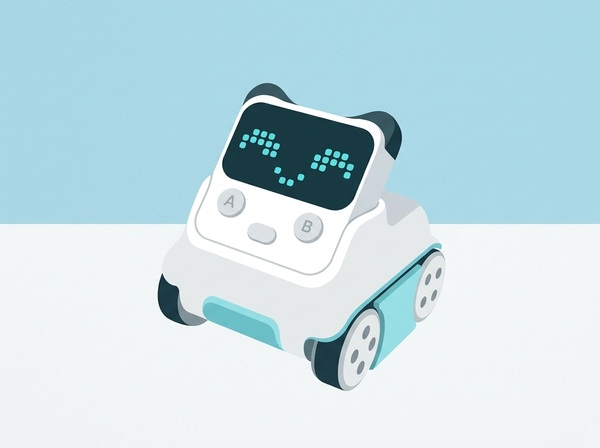
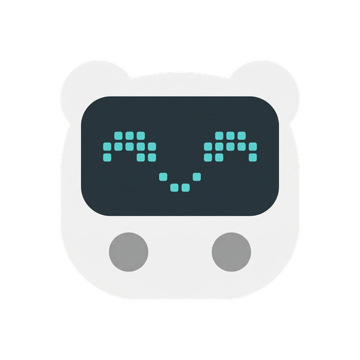

CodeyRocky
El robot amb pantalla LED 16 × 8, sensors i moviment amb orugues
Codey Rocky està format per dues parts desacoblables: 'Codey' (el cervell amb pantalla matriu de 128 LEDs, sensor de llum, micròfon, altaveu i giroscopi) i 'Rocky' (el xassís oruga amb sensors de color i d'infrarojos). Es programa amb blocs tipus Scratch o Python a través del software mBlock 5.
De l'observació al codi
Codey Rocky combina el mòdul Codey amb el xassís Rocky i es programa amb mBlock. La matriu de LEDs, els botons i els moviments observables permeten començar amb esdeveniments; els sensors del xassís obren reptes de línia, color i distància. Separar «què llegeix el sensor?» de «què hauria de fer el programa?» evita que les proves es converteixin en una successió de temptatives a l'atzar.
Una primera seqüència de sessions
- Connecta el robot i prova una resposta simple a un botó o mostra un símbol a la matriu.
- Crea una ruta curta i observa què fa Rocky amb un sol sensor actiu.
- Registra el resultat, revisa la condició o el llindar i torna a provar la mateixa ruta.
- Presenta el programa explicant què desencadena cada acció.
Adaptacions a l'aula
Per parelles, una persona prediu i ordena els blocs i una altra gestiona l'execució; invertiu els rols abans de provar un canvi. Tingues preparat un mode de simulació amb targetes si hi ha un problema de Bluetooth o bateria. Per a classes nombroses, usa una ruta compartida i feu que els equips rellevin com a observadors.
La fitxa del fabricant descriu programació amb blocs i Python, botons, matriu, sensors de so i llum, giroscopi i funcions infraroges; els accessoris i comportaments exactes depenen de la configuració. Fitxa oficial del fabricant.
Recursos oficials del fabricant
Per consultar materials, compatibilitat i instruccions actualitzades. Les activitats de Robòtica200 són adaptacions pròpies.
- Guies i casos de Codey RockyGuies de configuració, programació amb mBlock i reptes amb sensors.
- Codey Rocky & Neuron DiscoveryCurs amb seqüències, bucles, condicions, sensors i activitats desendollades; algunes parts requereixen Neuron.
Tutorials de CodeyRocky
Tutorials pas a pas pensats per a l'ús directe a l'aula.
Primeres passes: Connexió a mBlock 5 i cares a la matriu LED
Connectar Codey al software de l'ordinador o tauleta i programar animacions facials i missatges lliscants.
Motors i sensors: Esquivador d'obstacles amb infrarojos
Utilitzar les erugues de Rocky i el sensor frontal per aturar-se o girar abans de xocar contra una paret.
Reconeixement de veu i Intel·ligència Artificial
Utilitzar l'extensió de Serveis Cognitius per controlar el moviment del robot mitjançant ordres de veu en català.